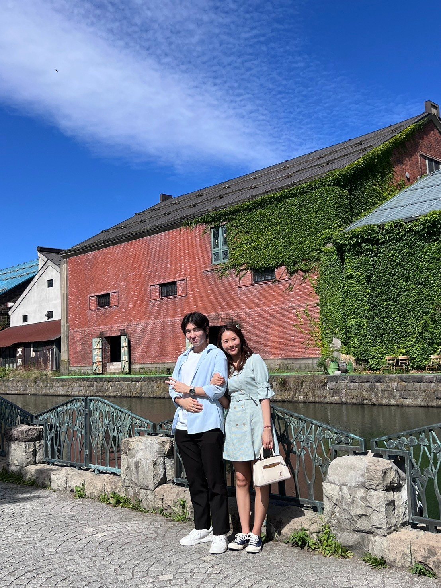
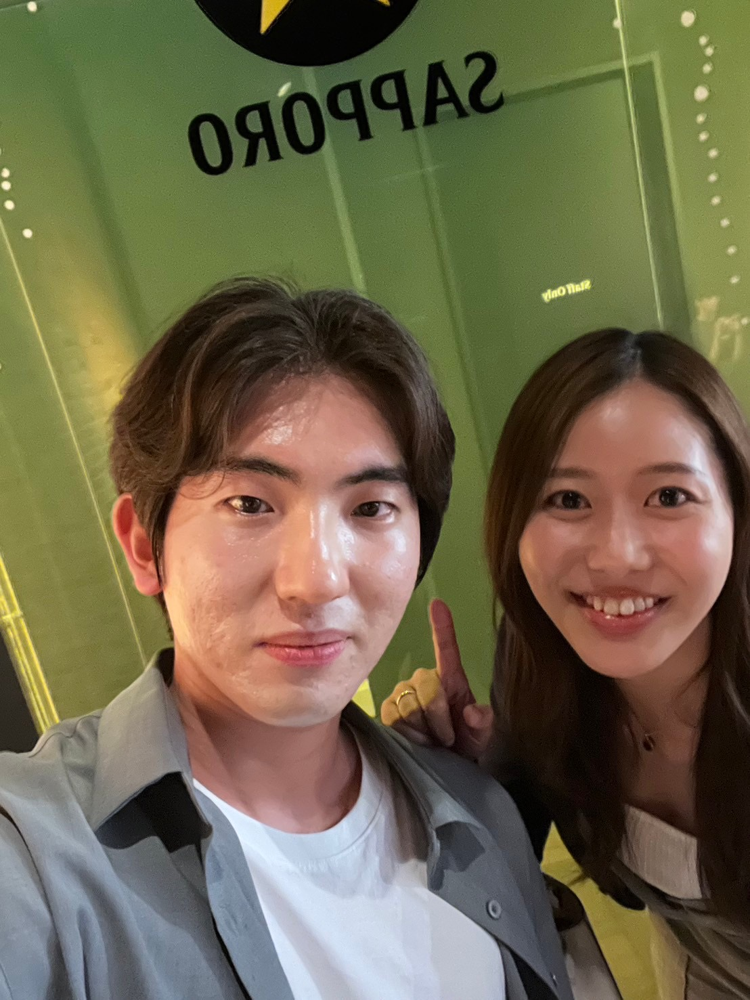
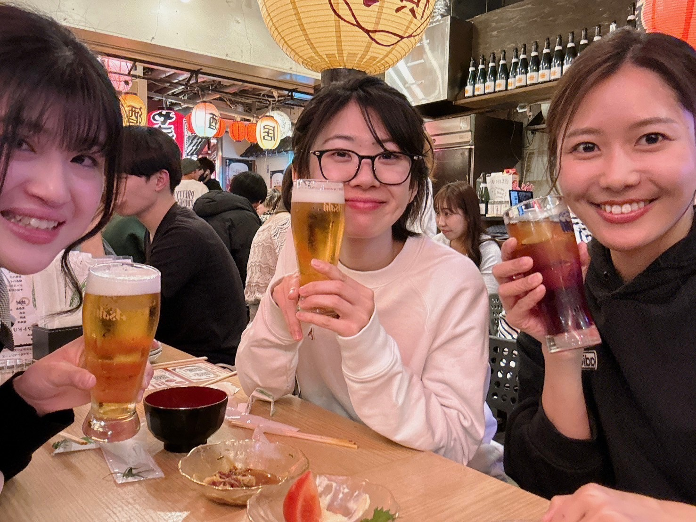
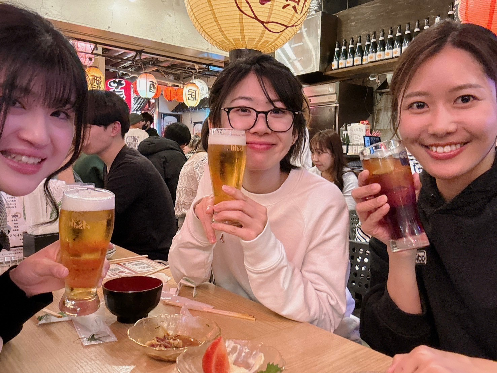

2024.10.01
경준이에게🐥
평소에 떨어져 지내서 그런지, 눈 깜짝할 사이에 사귄 지 1년 됐어.
한국에서는 100일, 200일 이렇게 축하하는게 일반적이라는데 우리 기념일은 언제였을까? ㅋㅋㅋㅋㅋ
1년 전 오늘은 도쿄에서 경준이에게 반지를 선물한 날이었지.
갑작스런 고백?에 조금 당황하고, 하지만 기뻐서, 하지만 앞으로 어떻게 될까 하는 불안감도 있어서,
그 여행중에 조금 정신적으로 불안정해져 이상한 편지를 써 주었지.
심지어 버스 안에서 더러운 글씨로.
그로부터 1년이 지나고, 아무래도 오랫동안 함께 있는 것은 이루어지지 않고 있지만,
그 정색의 가면 아래에는 사실 넓고 따뜻한 마음을 가지고 있어서, 항상 나를 아껴줘서 정말 고마워.
내 마음속의 답답함이나 복잡한 감정은 경준이 아니면 할 수 없었던 것들이 대부분이고,
가끔 격한 어조가 되어버리는 것도 이 사람이라면 받아주고 이해해주겠지, 라는 나의 어리광이 있었기 때문이었어.
가뜩이나 무리한 것을 강요하고 있는데, 더 불합리한 것들을 많이 하거나 요구해 버린 것들이 많아져서 반성하고 있어.
본심을 서로 부딪치는 것은 무서운 일이지만, 떨어져 있기 때문에 항상 진심으로 대하지 않으면,
관계가 무너져 버리는 것은 한순간일지도 모른다고 두려워졌다.
서로 앞으로도 부딪힐 벽, 고민할 것, 힘든 일, 그리고 티격태격하게 될 것, 아직은 긴 인생이니까 많이 있을 거라고 생각해.
협력해서 해결할 수 있는 문제라면 좋지만, 각각이 자력으로 어떻게든 해야 할 일도 많을 거야.
하지만 경준이가 언제부턴가 말하듯이 자신이 할 수 있는 최선의 선택을 해나간다면 그것이 서로에게 도움이 될 것이라고 믿고 싶다.
떨어져 있는데도 항상 내 마음 깊은 곳에서 버팀목이 되어줘서 고마워.
몇 번을 말해도 전달이 안 된 것 같아서.
때로는 마음이 흐트러져도, 모든 것이 싫어져도 저는 경준이를 믿고 손을 잡고 있으려고 있어요.
나를 못 믿겠다는 얘기를 듣고 솔직히 너무 충격을 받아서 지금도 울컥하고 있는데,
왜냐하면 한번 신용을 잃으면 되찾는 데 얼마나 시간이 걸릴지 모르니까.
앞으로는 할 수 있는 한 말하기 힘든 것도 빨리 전달되었으면 좋겠어.
경준이도 힘들 때는 괴롭다, 무리할 때는 무리다, 그건 이상하다고 생각하면 이상하다고 말해줬으면 좋겠어.
티격태격할 수도 있지만 지금까지도 그렇게 엇갈림을 풀어왔을 테니까.
아무것도 해주지 못해서 미안해.
나를 못 믿는지 모르겠지만 경준이한테 나는 되게 여린 존재인지, 어떤 존재로 비쳐지는지 모르겠지만 옆에 있어도 되나?
"슬럼프가 오는 것은 내 인생에 최선을 다하고 있다는 증거다" "힘든 상황에서도 스스로를 힘들게 하지 말자"
뻔한 말로 들릴지 모르지만 누군가 했던 말이야.
1년 기념 메세지가 이렇게 울적해서 어떡하지? ㅠㅠㅠㅠ
아무튼 이번주 주말에 만날수 있기를 기대하고 있으니까, 몸상태를 가다듬고, 너무 무리하지마.
너무 좋아해요.
2024.10.01 마유가🌹
 ギョンちゃんへ🐥
普段離れて過ごしているからか、あっという間に付き合って1年が経ったよ。
韓国では100日、200日って祝うのが一般的だそうなのに、我々の記念日はいつだったの？笑
1年前の今日は東京でギョンちゃんに指輪をあげた日だったよね。
予想もしていなかった突然の告白？にちょっと戸惑って、でも嬉しくて、でもこれからどうなるんだろうって不安もあって、
その旅行中に少し精神的に不安定になっちゃって、変な手紙をあげちゃったよね。
しかも揺れるバスの中で、汚い字で。
あれから1年が経って、やっぱりどうしても長い期間一緒にいることは叶わないままだけど、
その真顔の仮面の下には実は広くて暖かい心を持っていて、いつも私を大事にしてくれて本当にありがとう。
私の心の中のもどかしさや複雑な感情は、ギョンちゃんにじゃなければ言えなかったことがほとんどで、
たまに激しい口調になって捲し立ててしまうのも、この人なら受け止めてくれて理解してくれるだろう、
という私の甘えがあったからだったよ。
ただでさえ無理なことを強要しているのに、もっと理不尽なことをたくさん言ったり、
要求してしまったことが多くなってしまって反省しています。
本音をぶつけ合うのは怖いことだけど、離れているからこそいつも本気で接しないと、
関係が崩れてしまうのは一瞬なのかもしれないと怖くなった。
お互いこれからもぶつかる壁、悩むこと、辛いこと、そして喧嘩やすれ違いになること、
私たちはまだ若くて、まだ長い人生を歩むはずだから、たくさんあると思う。
協力して解決できる問題ならいいけれど、それぞれが自力で何とかしなければならないことも多いと思う。
でも、ギョンちゃんが最近言うように、自分ができることをそれぞれやって、
最善の選択をしていけば、それがお互いの役に立つと信じたいな。
離れているのにいつも私の心の深いところで支えになってくれてありがとう。
何回言っても伝わっていないような気がして。
時には心が乱れても、すべてが嫌になっても、私はギョンちゃんを信じて、その手を離さないでいたいです。
私を信じられないという話を聞いて、正直とても衝撃を受けて今も泣きそうになっているよ、
一度信用を失ったら取り戻すのにどれだけ時間がかかるか分からないから。
これからはできる限り言いにくいことも早く伝わればいいな。
ギョンちゃんも辛い時は辛い、無理な時は無理だ、それはおかしいと思ったらおかしいと言ってほしい。
言い争ったことも何回かあったけど、今までもそうやってすれ違うのを避けてきたはずだから。
何もしてあげられなくてごめんね。
私を信じられないのかもしれないし、ギョンちゃんにとって私はすごく脆くて不安定なだけの存在なのか、
どんな風に映っているのか分からないけど、そばにいてもいいのかな。
「スランプが来るのは私の人生で最善を尽くしている証拠だ」 「大変な状況でも自分を苦しめないようにしよう」
ギョンちゃんにはありきたりな言葉に聞こえるかも知れないけど、誰かが言った言葉だよ。
1年記念のメッセージがこんなに鬱々としててどうしよう？😢
とにかく今週末に会えるのを楽しみにしているから、体調を整えて、あまり無理をしないでね。
自分をいたわって。
大好きです。
2024.10.01 真侑より🌹
2024.04.15
경준이에게
안녕! 29살 생일 축하해.
아무래도 상관없지만, 이 메시지를 쓰던 날 점심에 케이크가 나왔어. 갑자기 왜? 라고 생각했는데, 타이밍에 깜짝 놀랐어.
근데 경준이 생일을 어떻게 축하할까 계속 생각하고 있었는데, 편지나 선물을 보내도 그날에 도착할지도 모르겠고, 다음에 언제 만날지도 모르겠고,
그래도 꼭 당일에! 어떻게든 축하해주고 싶어서! 이렇게 홈페이지를 만들어봤어. 디지털 앨범(수제 엘범은 귀찮다)ㅋㅋㅋㅋㅋ
돈은 안 들었지만 '시간은 금이다' 라고 하잖아? 그리고 중요한건 마음이니까~.
앞으로도 함께 여러 곳을 다니며 새로운 도전도 하고 많이 행복한 시간을 보냈으면 좋겠다.
때로는 괴로운 일이나 슬픈 일도 있을지도 모르지만,서로 의지하고, 타협할 수 있으면 좋겠다.
떨어져 있어도 항상 옆에 있어줘서 고마워. 태어나줘서, 날 만나줘서, 오늘까지 열심히 살아줘서 고마워! 행복한 하루 보내~♡
p.s. 한국에서는 생일에 미역국을 먹는데 경준이가 미역을 못먹는다는것을 얼마전에 알고 충격을 받았던 ㅠㅠ 난 미역국 진짜 좋아하는데 ㅠㅠㅠㅠ
2024.04.15 마유가
 

やほ〜！29歳のお誕生日おめでとう。
このメッセージを書いてた日の昼食にケーキが出たの。突然なんで？と思ったし、タイミングにびっくりした。
ギョンちゃんの誕生日をどうやって祝おうかずっと考えてたんだけど、
手紙やプレゼントを送っても誕生日当日に届くか分からないし、次にいつ会えるか分からないし、
でもどうしても当日に！なんとかして祝いたくて！こうしてホームページを作ってみたの。
デジタルアルバムwww(アルバム作るのはめんどくさいじゃん)。
お金はかかっていないけど、「時は金なり」って言うじゃん？そして大切なのは気持ちだから〜。
これからも一緒に色々な所に行って、新しい挑戦もして、たくさん幸せな時間を過ごせたらいいな。
時には辛いことも悲しいこともあるかもしれないけど、お互い支え合って、歩み寄れたら嬉しいな。
離れていてもいつもそばにいてくれてありがとう。
生まれてきてくれて、私と出会ってくれて、今日まで頑張って生きていてくれてありがとう！
幸せな1日を過ごしてね♡
p.s. 韓国では誕生日にワカメスープを食べるらしいのに、ギョンちゃんがワカメ食べられないってこの前知ってショック泣泣
私ワカメスープ大好きなのに...
2024.04.15 まゆより